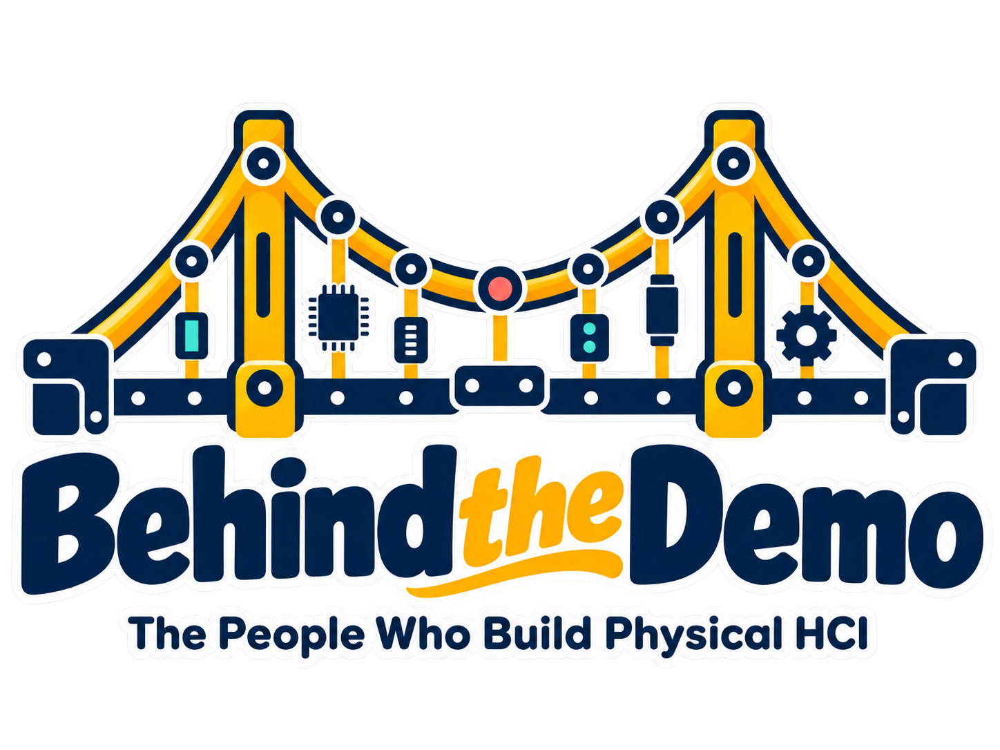
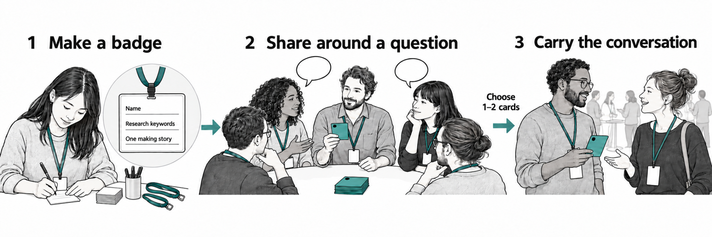
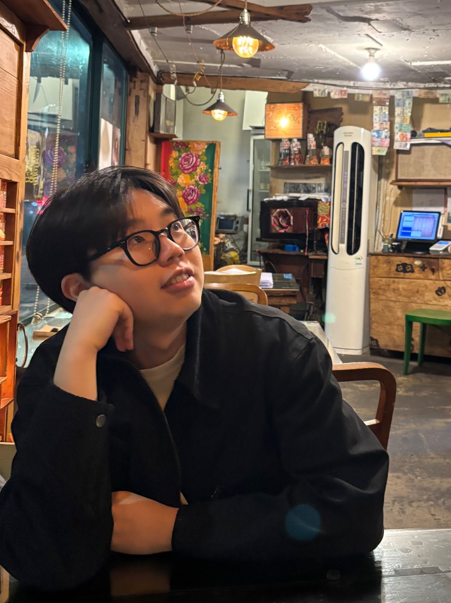

05–15 MIN
Make a Badge
Add your name, one to three research-area keywords, and a short sentence about your most time-consuming making task.

A meet-up for people who build and adapt physical interactive systems and research setups across HCI, and want to share the practical work that rarely appears in papers.
Meet-Up
A working demonstration can hide months of fabrication, integration, debugging, and preparation for use by others. Behind the Demo makes room for the human effort of turning an idea into something people can use.
Projects may differ in their goals and technologies, but the practical challenges of building and testing them can provide common ground for conversation across fields. Our theme of physical HCI brings together hands-on experiences with hardware and software in the physical settings where people use them.
We invite stories about persistent problems, unexpected fixes, and decisions about when a system is ready.
Community
Researchers, students, designers, engineers, and technical staff who build, adapt, or test interactive systems, integrate existing components, or prepare or maintain physical or virtual research setups.
New to hands-on HCI? You are welcome too.
Meet-Up Format
The 90-minute session welcomes all CHI attendees. No preparation or prototype is required. Badges and question cards provide shared starting points to break the ice and support informal networking.

Add your name, one to three research-area keywords, and a short sentence about your most time-consuming making task.
In groups of five, draw from a shared card deck and compare problems, fixes, and practical decisions. Passing is always welcome.
Take one or two cards you enjoyed, meet someone from another group, and continue the conversation across research areas.
Discussion
“What took months to build but only one sentence to describe in a paper?”
“What surprisingly small change finally solved a stubborn problem?”
“What problem appeared when someone else tried a system that worked for you?”
“What does one demonstration or study session really take in setup, charging, transport, and cleanup?”
Physical HCI Practice
These are starting points, not boundaries. Participants can bring other making challenges, whether resolved or still open.
Coordinating timing and locating faults across components.
Adapting fit and calibration across users.
Restoring connections, calibration, and repeatability.
Judging readiness and prioritizing fixes before moving forward.
Team

GIST
Ph.D. Student
GIST
Ph.D. Student
GIST
Ph.D. Student
GIST
Ph.D. Candidate
GIST
Ph.D. Candidate
GIST
Researcher
GIST
Professor · PAIR-HCI Center Director
UT Dallas
Associate Professor
MIT
Professor · CSAIL Director
Members of the team previously organized the UbiComp 2024 workshop on AI-infused Physical Systems. During the meet-up, organizers will share making stories, facilitate conversations, and help connect participants.
After the Session
We hope participants leave with a colleague who recognizes their making challenges, a practical suggestion or new perspective, or a conversation to continue.
Interested participants can exchange contacts and suggest future gatherings. Notes or resources circulated afterward will be selected with their contributors’ agreement.
Event
Conference: ACM CHI Conference on Human Factors in Computing Systems 2027
Location: Pittsburgh, Pennsylvania, USA
Date, time, and room: To be announced.
Contact
Seongjun Kang
ksjryan0728@gm.gist.ac.kr